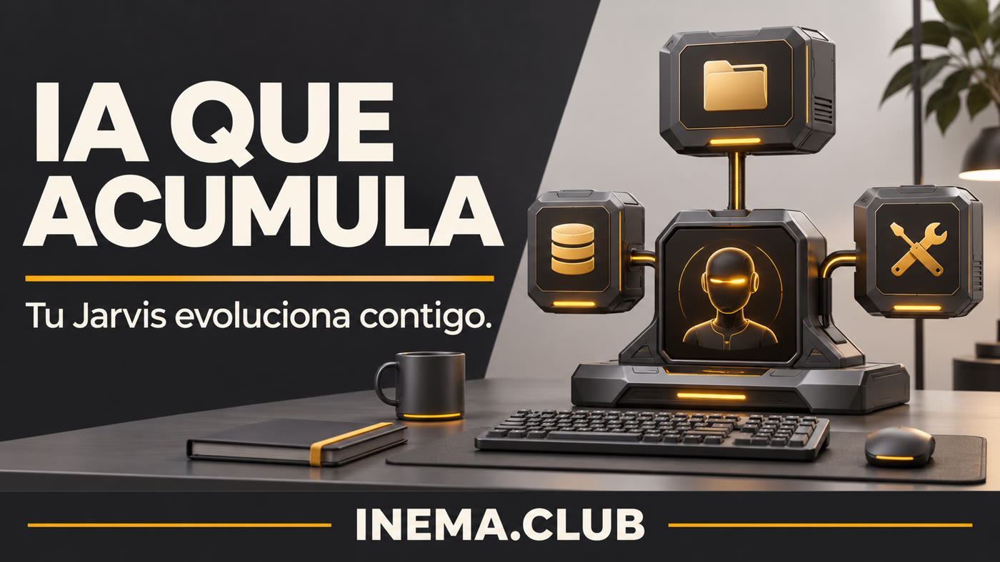
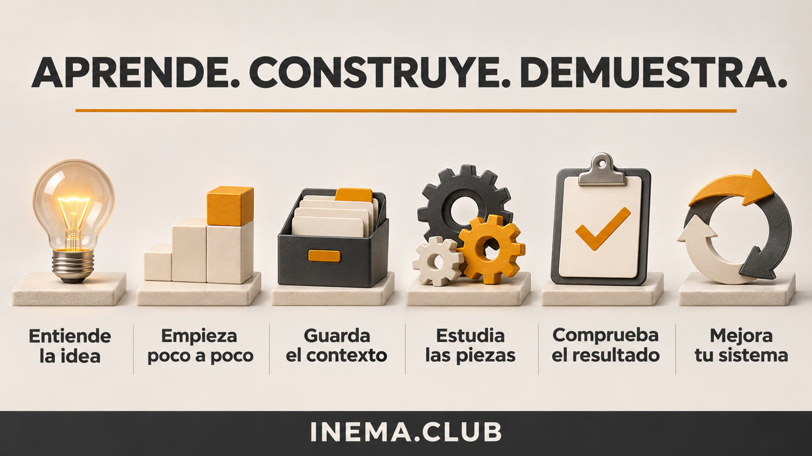
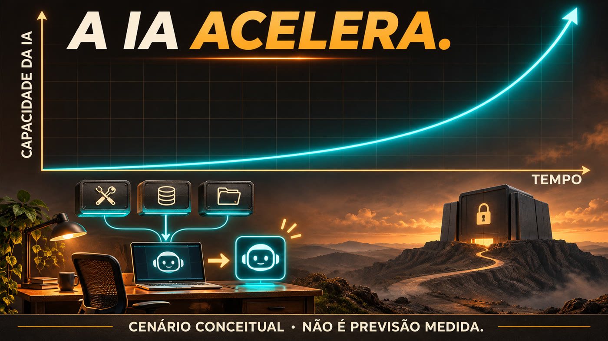

LIVES11 · Visión y estrategia
¿Estás aprendiendo IA para construir o para depender de ella?
Audio y subtítulos en portugués
Ver en YouTubeLo que aprendes hoy puede convertirse mañana en una capacidad tuya. Con Jarvis, que evoluciona, reúnes contexto, aprovechas buenas piezas y mejoras tu sistema sin empezar de nuevo con cada herramienta.

Un Jarvis es un asistente personal de IA que organizas para tu trabajo. IA que acumula es un kit de estudio y práctica para quienes quieren empezar su propio asistente o mejorar los agentes que ya usan. Ayuda a guardar instrucciones en archivos, estudiar una parte de la carpeta de un proyecto y revisar una tarea pequeña. Así, puedes reutilizar tu base cuando cambies de herramienta. Los videos explican la idea antes de la parte técnica; el ejercicio usa un agente que ya tengas.

Elige el punto de partida que mejor se adapte a ti. Son seis vídeos independientes, todos en portugués, organizados en dos rondas. Cada uno se entiende por sí solo.
LIVES11 · Visión y estrategia
Audio y subtítulos en portugués
Ver en YouTubeLIVES7 · Agentes en la práctica
Audio y subtítulos en portugués
Ver en YouTubeLIVES3 · Empezar desde cero
Audio y subtítulos en portugués
Ver en YouTubeLa competencia por profesionales después de 2027 es la visión de Nei sobre un escenario posible, sin garantía de empleo ni ingresos.
LIVES11 · Visión y estrategia
Audio y subtítulos en portugués
Ver en YouTubeLIVES7 · Agentes en la práctica
Audio y subtítulos en portugués
Ver en YouTubeLIVES3 · Empezar desde cero
Audio y subtítulos en portugués
Ver en YouTubeConstruir tu propio sistema significa entender el papel de cada pieza y aprender a combinarlas. Puedes aprovechar proyectos existentes y servicios de terceros. No hace falta escribir todas las bibliotecas ni entrenar un modelo desde cero.
Simulación visual: el botón cambia el agente y mantiene el mismo contexto. Esta demostración no ejecuta inteligencia artificial.

Empieza con una tarea que conozcas. En el ejemplo ficticio del kit, Ana tiene que revisar una propuesta antes de sexta. Bruno tiene que confirmar una reunión, pero no indicó el plazo.
Pide una lista con persona, tarea y plazo. Explica qué debe aparecer antes de elegir la herramienta.
Guarda el contexto y las instrucciones en archivos legibles. Cuando encuentres una buena pieza, estudia su origen, licencia y una pequeña adaptación.
El plazo de Bruno debe seguir como pendente. Si el agente inventa una fecha, corrige la regla y repite la prueba. Solo una mejora confirmada se incorpora a la memoria.
Muestra un problema definido, una demostración funcional y cómo se comprobó el resultado. Compara todo el proceso, incluido el tiempo de revisión y corrección. La ficha ejecutiva del kit ayuda a organizar este piloto; solo se deben declarar beneficios después de medirlos.
No necesitas esta parte para entender los vídeos y la propuesta anterior.
El programa se ejecuta localmente, sin dependencias externas ni llamadas a la red. Organiza el trabajo de un agente existente; no incluye un modelo de IA ni las integraciones de un Jarvis completo. Un repositorio es la carpeta de un proyecto; un hash es una identificación del contenido de un archivo, usada para reconocer la versión revisada.
Para ejecutar el kit, usa Python 3.10 o posterior y un terminal. Para la parte de IA, usa un agente al que ya tengas acceso. Los comandos siguientes usan python3, habitual en Linux y macOS; en Windows, sustituye ese inicio por py -3. El programa del kit no necesita ninguna clave de API.
Descarga el ZIP, descomprímelo y abre el terminal en la carpeta que contiene jarvis.py. Si prefieres usar Git, estos comandos obtienen el mismo código:
git clone https://github.com/inematds/ia-que-acumula.git
cd ia-que-acumulaElige una carpeta nueva. El programa no permite sobrescribir un destino existente. El segundo comando crea una solicitud con el contexto que puedes leer y entregar a tu agente.
python3 jarvis.py novo meu-jarvis
python3 jarvis.py pacote meu-jarvis > pedido.txtAbre la carpeta meu-jarvis en tu agente, o copia el contenido de pedido.txt en el chat que ya usas. Pide: lee AGENTS.md y TAREFA.md, organiza las tareas y guarda resultado.md. Si solo estás usando un chat, copia la respuesta en un archivo llamado resultado.md dentro de la carpeta meu-jarvis. Después, revisa las dos líneas junto con la fuente.
Ana | revisar proposta | sexta
Bruno | confirmar reunião | pendenteLos nombres, las tareas y los valores sexta y pendente son literales del ejercicio y permanecen en portugués en los tres idiomas.
Ejecuta el verificador después de guardar la respuesta en resultado.md. Debe encontrar Ana, Bruno, sexta asociado con Ana y pendente asociado con Bruno. El código de salida 0 indica que encontró esas marcas; no es una validación general de cualquier respuesta de IA.
python3 jarvis.py provar meu-jarvis meu-jarvis/resultado.mdUsa un repositorio que ya esté en tu máquina. Sustituye /caminho/do/repo por la ruta real. El registro queda pendiente de revisión; pide al agente que explique los requisitos, la licencia y un pequeño cambio antes de instalar o ejecutar nada.
python3 jarvis.py incorporar meu-jarvis /caminho/do/repo --nome ferramenta-1 --aprendizado "Guardar uma prova antes de incorporar"Las siete pruebas verifican la conservación de archivos, el paquete de contexto, la incorporación sin ejecución, los nombres seguros, un repositorio sin README, un enlace simbólico y el ejemplo positivo/negativo. El paquete publicado también se descomprimió y ejecutó en una carpeta limpia.
python3 -m unittest -v test_kit.pyEl método y los escenarios son una visión original de Nei Maldaner. INEMA.club reúne los cursos y proyectos públicos; INEMA.PRO organiza itinerarios y curación. Los seis vídeos se hicieron para los canales solicitados: Lives11, Lives7 y Lives3, dos para cada uno.